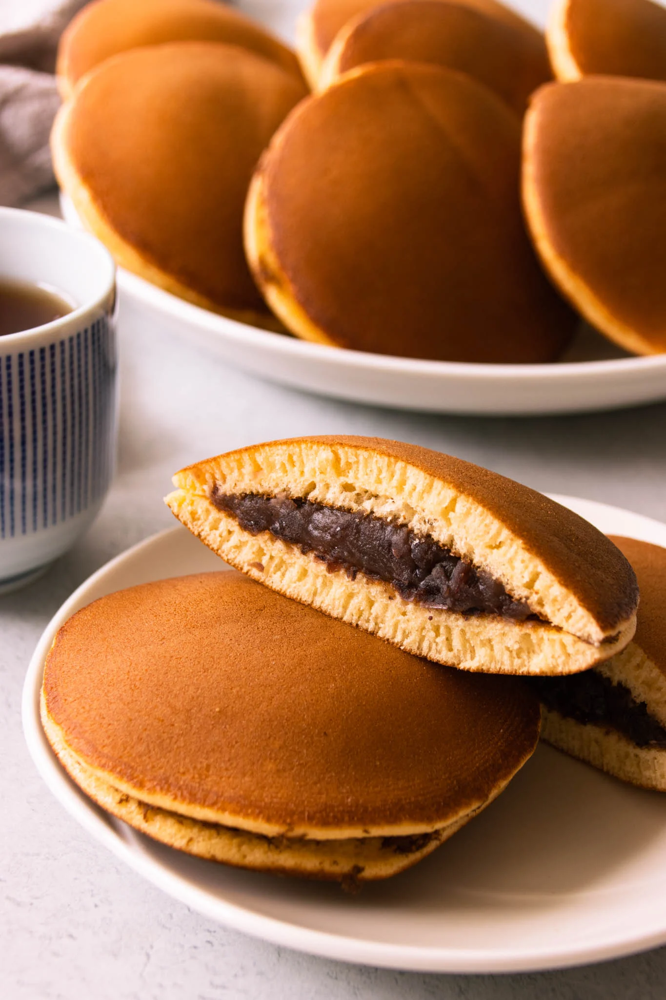

Dorayaki Recipe

Description
Dorayaki is a popular Japanese dessert consisting of two fluffy pancakes filled with a sweet red bean paste, known as "anko." These delightful treats are often enjoyed as a snack or dessert and are loved for their soft texture and deliciously sweet filling.
- 2 large eggs
- 1/2 cup granulated sugar
- 1 tablespoon honey
- 1 teaspoon vanilla extract
- 1/2 cup all-purpose flour
- 1/2 teaspoon baking powder
- 1/4 teaspoon salt
- Sweet red bean paste (anko)
Steps
- In a mixing bowl, beat the eggs and sugar together until light and fluffy.
- Add the honey and vanilla extract to the egg mixture, and continue beating until well combined.
-
In a separate bowl, sift together the flour, baking powder, and salt.
-
Gradually add the dry ingredients to the wet ingredients, stirring until smooth and well incorporated.
-
Heat a non-stick skillet or griddle over medium heat and lightly grease with oil or butter
-
Pour about 1/4 cup of the batter onto the skillet to form a pancake, and cook until bubbles form on the surface, then flip and cook until golden brown on both sides.
-
Repeat with the remaining batter to make additional pancakes.
-
Once all the pancakes are cooked, spread a generous amount of sweet red bean paste onto one pancake, then sandwich another pancake on top to form a dorayaki.
-
Serve the dorayaki warm or at room temperature, and enjoy the delicious combination of fluffy pancakes and sweet red bean paste filling!